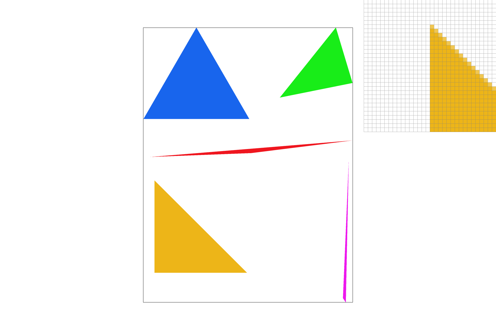
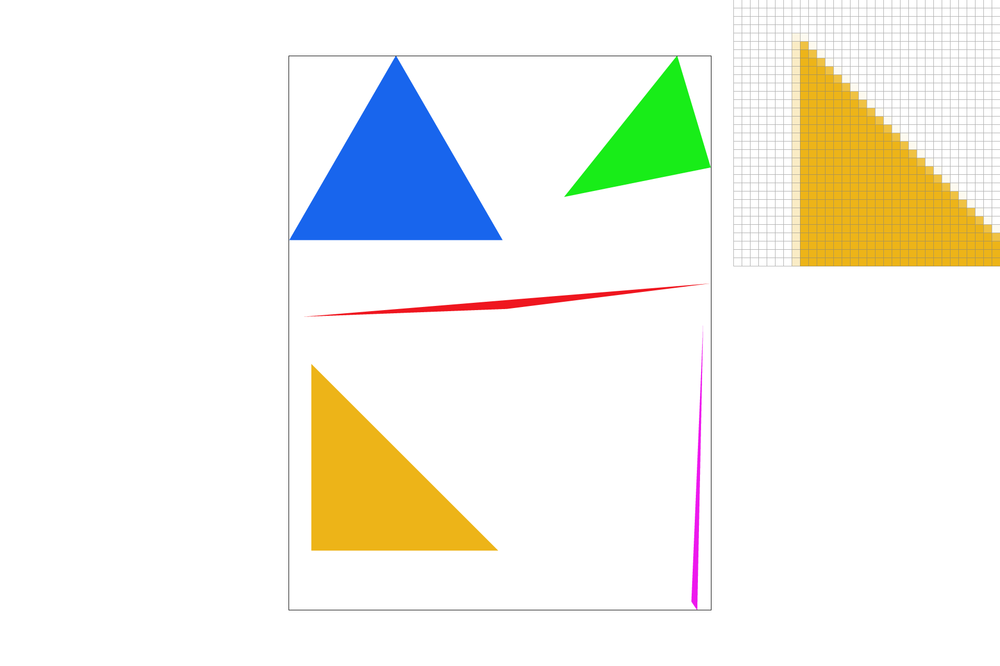
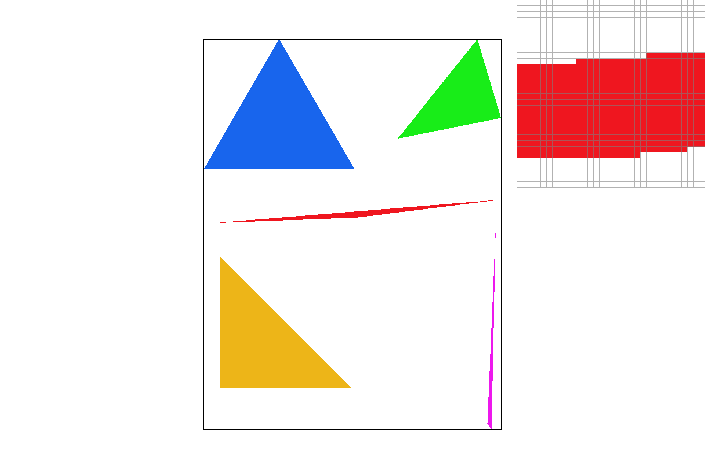
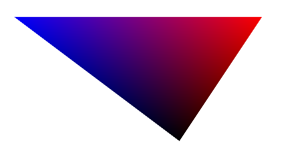
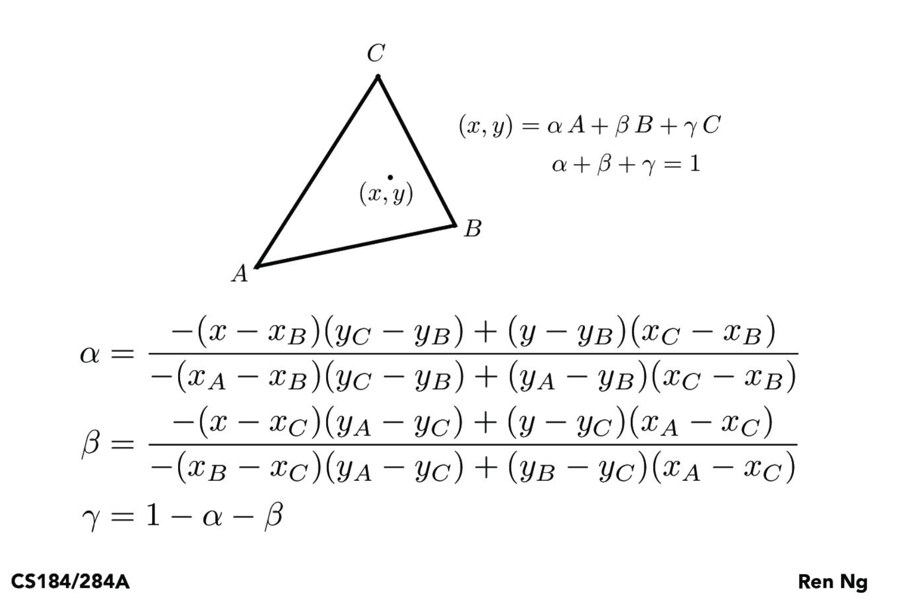
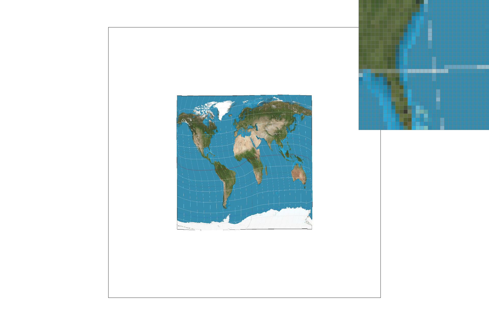
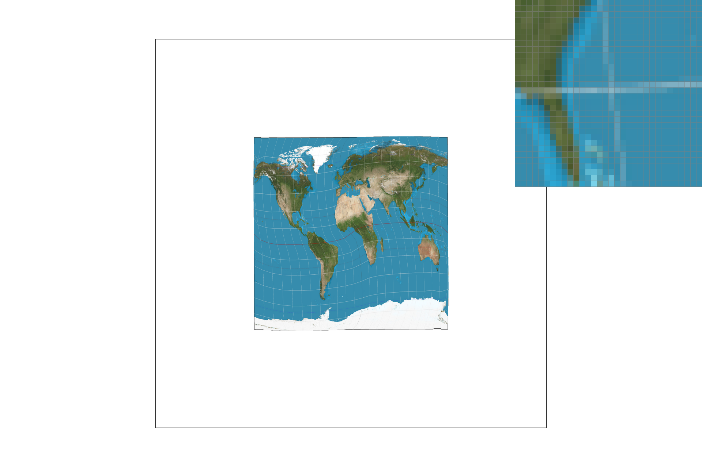
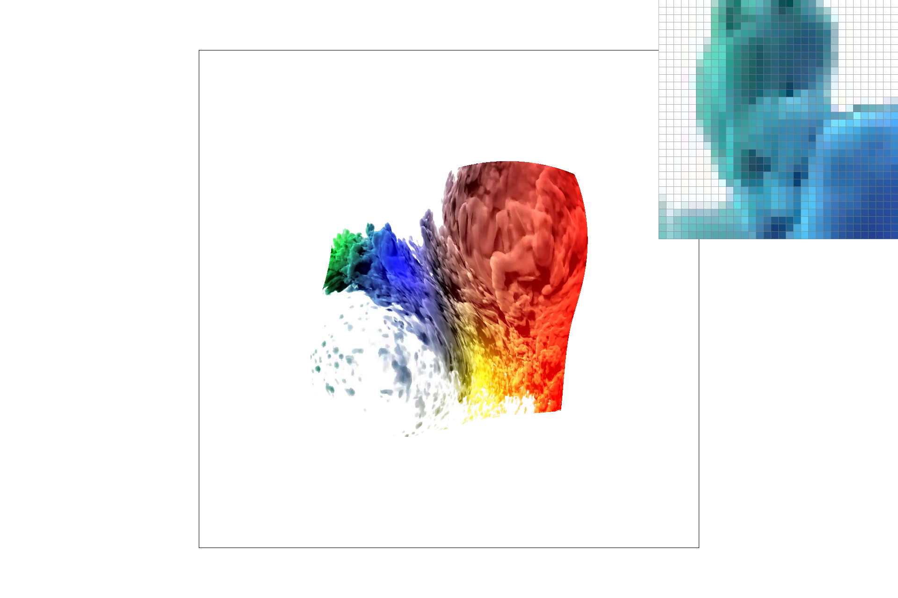
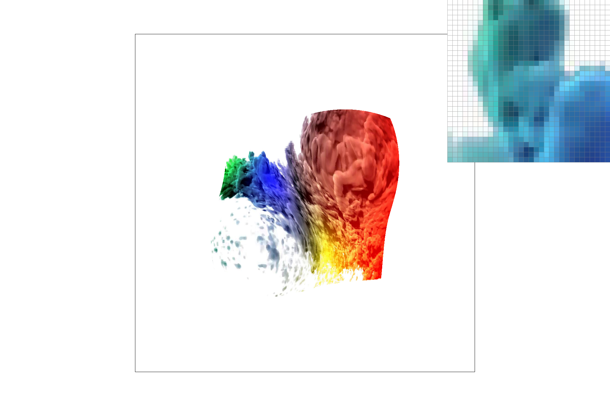
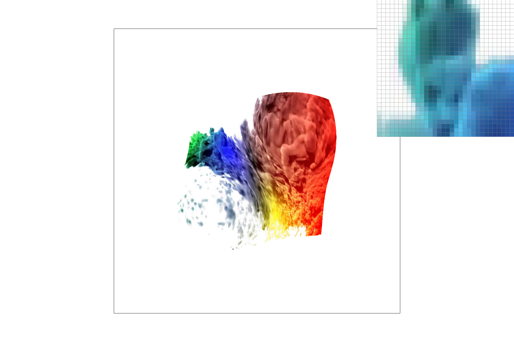

Overview
This project involves many tools required to rasterize images in order to render vector graphics. We begin with rendering shapes as simple triangles, supersampling for antialiasing, and transforming these triangles. The project also includes sampling and using Barycentric coordinates for texture mapping. We have implemented bilinear and trilinear sampling.
Section I: Rasterization
Part 1: Rasterizing single-color triangles
The first part of this project was rasterizing triangles. In particular, a triangle is defined by its three
corners. For every pixel in the image, we decide if the pixel is within the triangle or inside of it. This is
done by testing a sample (x +0.5, y+0.5) in the middle of the pixel.
The algorithm for determining whether a point is inside a triangle is by projecting it onto a vector normal, and
pointed towards the inside of the triangle. If the value of the projection is 0, it is on the edge, and if it is
greater than 0, it is towards the inside. If a point is inside of each of the 3 edges, it is considered inside
of the triangle.
Since we could not assume that the triangle vertices are given in a clockwise (or counter clockwise) order, I
calculated the angle of each vertex from the center in order to sort them (theta in polar coordinates).
I also implemented the OpenGL/Direct3D standard of including points only if it falls on a left or top edge.
This is done by allowing equality (rather than strict inequality) on the comparison for these edges.
My implementation only checks each pixel once within the bounding box defined by the maximum and minimum
coordinates of the vertices, thus it meets the time complexity requirement.
In this part we also implemented a fill color method, for assigning subpixels a color to a subpixel. This is
done by converting the values of the r,g,b parameters in the Color object from a [0 - 1] float to an
unsigned char from [0, 255].
Part 2: Antialiasing triangles
One issue with this method for drawing triangles is that along the edge of the triangle we often have to make a
hard decision on whether this pixel is within the triangle or not. For example, while we only test the specific
point in the center of the pixel, the entire square is colored or not colored. In order to make this less
drastic, we can antialias this pixel by sampling more frequently. We take multiple samples in a pixel and then
when we resolve the image, we end up taking the averages of all subpixels in the image.
More concretely, in order to implement this, for each pixel we loop through the subpixels, that are evenly
distributed across the pixel. We then test each of these, and assign the subpixel the correct color. For example
instead of simply sampling at (x + 0.5, y + 0.5) which is the center of the pixel for a supersampling rate of 4,
we sample at [(x + 0.25, y + 0.25), (x + 0.75, y + 0.25), (x + 0.25, y + 0.75), (x + 0.75, y + 0.75)] In this
step,
we only set the sub pixels to these values and do not resolve the full pixel yet, until we set subpixels for
every
triangle in the image.
The images below show why supersampling is so important to rasterization of triangles. Many of the edges and
corners in these images cross pixels, thus if we require a pixel to be fully "on" or "off", we get jagged edges.
You can see this in the first image (1x sampling). However, as we sample more frequently, the pixels on the
edges have intermediate values. This can be seen in the 4x sampled image, and very clearly in the 16x sampling
image.
In these images, the inspector is zoomed in onto a corner of the orange triangle.
|

|

|
This effect is also evident on the edges, which you can see on the red triangle in the red triangle in the middle. The shallow angle of its top edge has clearly visible jaggies in the 1x sampling, and this is much more gradual at 16x.
|

|
|
Part 3: Transforms
We can transform our triangles, by rotating, translating or scaling them. These
transforms are created by multiplying these transformation matrices with our points.
For example, for scaling a point by (s_x, s_y), we simply multiply each of the x coordinate by s_x and the
y coordinates by s_y. Thus scale(s_x, s_y)_(x,y) -> (s_x * x + s_y * y)
A rotation is done by left multiplying the point by a rotation matrix on the z-axis
this corresponds to rot(theta)_(x,y)-> (x *cos(theta) - y * sin(theta), x * sin(theta) + y * cos(theta))
Translating is done by just adding the translation to the coordinates: trans(dx, dy)_(x,y) -> (x +dx, y_dy).
Here is an image of a robot running and wearing shoes! This was created by rotating the arms and legs,
and translating them to be in the correct location.
Section II: Sampling
Part 4: Barycentric coordinates
In the previous part of the project, we filled each triangle with its own color. In this part, each vertex of
each
triangle carries its own color value. The Barycentric coordinates allow us to interpolate these colors to give
us
values for any location within the image.
Consider the figure below (left), the vertices each have a different color. You can notice that the center of
the
triangle produces is a gradient of all of the colors.
Concretely, we calculate alpha, beta, gamma values that represent the weights of each of the vertex,
based on the relative distances, and we take a weighted average of the colors at each vertex based on these.
On the right is an image from lecture on how these are calculated.
|

|

|

Part 5: "Pixel sampling" for texture mapping
Similarly to part 4, for sampling in a texture map, we are also using Barycentric coordinates.
Here however, we take an (x,y) coordinate and map it to (u,v) coordinates, using alpha beta and gamma.
Now, we can look into a texture map for the color values to use.
Here we have two methods in order to get samples, since the exact (u, v) values we calculate don't have values.
The first is nearest pixel
sampling, and in this we just round our scaled (u,v) and take on the values of the nearest one. The second
is bilinear sampling. Here we actually look at the 4 samples around our (u,v). We take a weighted sample
of these based on the distance we are from each one.
This image from Lecture shows how I calculated the (u,v) values needed for bilinear sampling.
For these provided images, we can see that using bilinear sampling performs a smoothing of the image, similar to what we get from antialiasing. At 16x antialiasing, the difference between the two sampling is not as clear as in 1x sampling. Doing bilinear sampling this requires 4 times as much sampling and additional math when compared to nearest sampling, so depending on the image and texture maps, this may not be worth it.
|
|

|
|
|

|
Part 6: "Level sampling" with mipmaps for texture mapping
In part 5, we looked at "level 0" of each of the mipmaps in order to sample the value for the texture. Here,
we compare the barycentric coordinates of a dx point (x+1, y) and dy point (x, y+1) to determine how much the
picture is shifting in the texture space. Once we have this, we can decide what level to sample the mipmap at.
Each level of this mipmap is at a lower resolution from the one before (0 being the original), so for images
where
there is little change in either direction, we can look at a lower resolution mip map to get texture sampling.
In order to calculate the level, we take the direction with maximum change, and take the log of the change.
The changes du/dx, dv/dx (and du/dy, dv/dy) represent how much change occurs in the texture space for
1 unit of change in the (x,y) space.
This image from lecture shows how I calculated the level for the image.
|

|
|
|
|
|
|

|

|
Analysis of various techniques
In our project we implemented a few ways to optimize the appearance of our rasterization. The first method we
included was antialiasing through super sampling. Sampling linearly increased the amount of time to render, as
well
as space required to store all the subpixel information, but the process was well worth it as this process gave
the biggest improvement. However, the benefits of sampling more and more finely reduce over time, with 9x and
16x
giving good quality for our images.
Additionally, we looked at pixel sampling for textures. This had two main methods, the nearest pixel, and the
bilinear
sampling. Bilinear sampling provided an improvement when we had no supersampling in place, but on upsampled
images, the improvements are not as clear.
However, performing bilinear sampling requires 4 times as much sampling and access to the mip map and 3 lerps.
Thus depending on the type of texture map
we should decide if the cost is worth it.
Finally, we looked at level sampling, it seems to be similar to pixel sampling in effect. This doubles the
number of sampling and adds another lerp.
In cases where we could be sampling the texture map too sparsely, we could end up creating moire patterns, using
a mip map and choosing the
correct level helps avoid that. Using a mip map only increases the amount of storage required by 4/3x, so it is
not too
problematic.
Overall, the last two processes don't seem to benefit too much for the images and texture maps provided,
especially if we are already
supersampling the image.
However, if we had a setting where we need to sample much more frequently or very sparsely from the texture
space,
we would be able to see these gains.